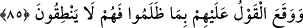
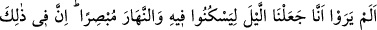
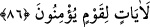

îman ve tâat için yaratılmışlardır.
Onlara böyle hitap edilmesi, onları azarlamak içindir. Artık onların “Biz başka şeyler
yaptık” demeye güçleri yoktur. Sonra onlar yüzükoyun cehenneme atılırlar. Nitekim
aşağıdaki âyet bunu anlatmaktadır:
85. Yaptıkları haksızlıktan ötürü, (azâba uğrayacaklarını bildiren) o söz
gerçekleşmiştir; artık onlar konuşamazlar.
“Yaptıkları haksızlıktan ötürü,” Allah’ın âyetlerini yalanlamalarından ibâret olan
zulümleri sebebiyle “(azâba uğrayacaklarını bildiren) o söz gerçekleşmiştir” yâni
geleceğini ve ineceğini haber veren sözün delâlet ettiği azâb onlara ulaşmıştır.
Azâbla meşgul oldukları veya ağızları mühürlendiği için mâzeretlerini beyan etmek
üzere “artık onlar konuşamazlar.”
Sonra Allah Teâlâ Mekke kâfîrlerine öğüt vererek ve onlar aleyhine delil getirerek
şöyle buyurdu:
86. Dinlensinler diye geceyi (karanlık) ve (çalışsınlar diye) gündüzü aydınlık
kıldığımızı görmediler mi? Îman eden bir kavim için elbette bunda birçok ibretler
vardır.
“Dinlensinler” uyku ve sükûnet ile istirâhat etsinler “diye geceyi” içindeki
karanlıkla “ve” gündüzde olan aydınlık sayesinde geçimle ilgili işlerde tasarrufta
bulunma yollarını görsünler diye “gündüzü aydınlık kıldığımızı görmediler mi?”
Acaba haşri inkâr edenler görmediler ve bilmediler mi? Buradaki ‘görme’ kalbin
görmesidir ki ilim/bilmek demektir.
Burada mübâlağa yapılarak, insanların bir husûsiyeti olan görme vasfı, gündüzün bir
husûsiyeti ve kendisinden ayrılmayan vasıflarından birisi kılınmıştır. Gece hakkında ise
böyle bir yola girilmemiştir. Çünkü sükûnet konusunda gece karanlığının tesiri,
göstericiliği/aydınlığı konusunda gündüzün ışığı mertebesinde/derecesinde değildir.
“Îman eden bir kavim için elbette bunda” gece ve gündüzün anlatıldığı şekilde
kılınmasında öldükten sonra diriltilmenin sahih ve onu haber veren âyetlerin
doğruluğuna açıkça delâlet eden “birçok” büyük âyetler “ibretler vardır.” Nasıl böyle
olmasın ki, gece ve gündüzün peşpeşe gelişini düşünen ve ufuklarda ölüme benzeyen